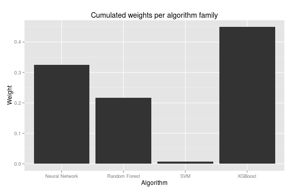

Kaggle Otto Group Product Classification Challenge
Just finished Otto competition on Kaggle in which took a part 3514 teams. Participiants had to classify products to one from nine categories based on data provided by e-commerce company and had 2 months to build their best solutions.
I can say proudly that I've deafeated more than 3400 teams and finally finished competition on 66th position. It's great but still there is a lot of things to learn.
I would like to shortly present prepared solution. It is not a surprise that my best result was produced by ensemble. So let's start from describing bricks used to prepare our construction.
Base models
XGBoost
It was the first time when I used xgboost. I'd heard about it before this competition but I've never tried earlier. I've started with version for R but later I've switched to Python to be able to easier integrate all models. It was also the strongest model in my ensemble.
To tune it I used well known rule of thumb - fit all parameters with small number of trees and higher learning rate and then increase number of trees and decrease learning rate.
So finally 4800 trees were incorporated.
Results below (as well as for rest of models) contains the best scores for the model from the particular kind of algorithm family.
Public LB: 0.43184
Private LB: 0.43290
Random Forest
I've found that using 600 trees is enough and allows you achive result with an error around 0.51. But the key part was calibration which allowed to decrease the error up to 0.45. One more thing here which helped to improve results was using stratified cross-validation during calibration instead default CV where data are splitted randomly without preservation class proportions.
Public LB: 0.44969
Private LB: 0.45272
Neural Networks
Few different architectures. Some supported by TDIDF, PCA or another features transformation and in some cases by bagging. But all of them used ReLU units and dropout for regularization.
To prepare all these models I used Lasagne. To speed-up tuning hyper-parameters I've implemented early stopping (I think I removed code for it from sklearn-style implementation which I used as a official and tuned solution).
Public LB: 0.44662
Private LB: 0.44844
SVM
Slow. Very slow. And it was inviable in terms of invested time and computing power to obtained improvement.
Public LB: 0.50267
Private LB: 0.50186
Other
During this competition I've also written Python wrapper for RGF (Regularized Greedy Forest) which alone was strong (approx. 0.46 loss) but it hasn't brought anything new into ensemble.
I've also tried with linear models but the best one couldn't break 0.53 error.
Tuning
For most of the algorithms I used hyperopt to tune them automatically. I've found that manual optimization works well and it's much faster then using software for it but sometimes I have to sleep or be at work. Hyperopt doesn't have to.
However I think it will be nice to explore next time different tools for optimization.

Ensembling
I used weighted average to combine predictions from 8 chosen models. To find right proportion I used 5-fold cross-validation to generate predictions for train set and then cobyla optimizator from SciPy as a meta-learner.
Code
Whole code to reproduce my solution you can find in GitHub repository.
Potential improvements
During the competition I've tried with more sophisticated meta-learners as well as looking for weights separately for each class for each model. It returned me worse results than simple approach described earlier. However Optimistically Convergent team reported that they used neural network with success as a meta-model. For sure it'd something really worth to try.